Tema 3 Estimació puntual
L’objectiu principal de la inferència estadística és obtenir informació sobre tota una població a partir de només una mostra, com quan volem saber si un brou és fat o salat tastant-ne només una cullerada. El primer tipus d’informació que ens sol interessar és què val qualque paràmetre d’alguna variable aleatòria poblacional (una proporció, una mitjana…), per exemple per poder escriure un titular com el següent:

Aquest 60% no s’ha obtingut fent passar a tots els universitaris espanyols un test de miopia, ni tan sols demanant-los a tots si són miops o no, sinó que simplement s’ha pres una mostra d’universitaris, s’hi ha observat un 60% de miops i s’ha extrapolat aquesta proporció a tot el col·lectiu d’universitaris espanyols.
El procés d’intentar endevinar el valor d’un paràmetre d’una població a partir d’una mostra se’n diu estimació puntual, i és el que tractarem en aquest tema. Al tema següent ens centrarem en intentar endevinar el valor d’un paràmetre amb un cert marge d’error i de seguretat.
3.1 Definicions bàsiques
Per estimar el valor d’un paràmetre d’una variable aleatòria poblacional, en prenem una mostra (aleatòria simple) i calculam qualque cosa amb els valors que la formen. Què calculam? Doncs un estimador: alguna funció adequada aplicada als valors de la mostra, i que dependrà del que volguem estimar.
Figura 3.2: Població versus mostra
Per exemple:
Si volem estimar l’alçada mitjana dels estudiants de la UIB, prendrem una mostra d’estudiants de la UIB, els amidarem i calcularem la mitjana aritmètica de les seves alçades.
Si volem estimar la proporció d’estudiants de la UIB que han passat la COVID-19, prendrem una mostra d’estudiants de la UIB, els farem un test d’anticossos i calcularem la proporció mostral de positius en la mostra.
Formalment:
Tenim una variable aleatòria poblacional \(X\), definida sobre una població.
Una mostra aleatòria simple de mida \(n\) de \(X\) és un vector \((X_1,\ldots,X_n)\) format per \(n\) còpies independents de \(X\).
Cada variable \(X_i\) és una còpia de “Prenem un subjecte de la població i hi mesuram \(X\)”.
Una realització de la mostra aleatòria simple \(X_1,\ldots,X_n\) és un vector \((x_1,\ldots,x_n)\in \mathbb{R}^n\) de valors presos per aquestes variables aleatòries.
És a dir, amb \((X_1,\ldots,X_n)\) repetim \(n\) vegades (independents les unes de les altres) el procés de prendre un subjecte de la població i mesurar-hi \(X\). Cada vegada que ho fem, obtenim un conjunt de números, al que formalment diem una realització de la mostra.
A la lliçó anterior a aquestes realitzacions les déiem directament “mostres aleatòries simples de valors de \(X\)”; no passeu ànsia, en sortir d’aquest “formalment” els hi tornarem a dir.
Un estimador és una variable aleatòria \(f(X_1,\ldots,X_n)\) obtinguda aplicant una funció \(f\) a una mostra aleatòria simple \((X_1,\ldots,X_n)\).
Aquest estimador s’aplica a les realitzacions de la mostra i dóna nombres reals.
Com ja us hem dit, i com que no hi ha necessitat de filar tan prim, d’ara endavant cometrem l’abús de llenguatge de dir mostra aleatòria simple tant al vector de variables aleatòries \((X_1,\ldots,X_n)\) com a una realització \((x_1,\ldots,x_n)\); i hi ometrem els parèntesis.
Com ja hem comentat a la Secció 2.5, si la mida \(N\) de la població és MOLT més gran que la mida \(n\) de la mostra (per fixar idees, si \(N\geq 1000n\)), els resultats per a mostres aleatòries simples valen (aproximadament) per a mostres aleatòries sense reposició, perquè les variables aleatòries que formen la mostra sense reposició són gairebé idèntiques i independents i les repeticions són improbables.
Els estimadors tenen sempre sentit per a mostres en general, però gairebé tots els teoremes que estableixen les seves propietats són vertaders només sota determinades restriccions (mostra aleatòria simple, condicions extra sobre \(X\), …), per la qual cosa les seves conseqüències tan sols són segures sota aquestes restriccions.
3.2 Mitjana mostral
Quan volem estimar el valor mitjà d’una variable sobre una població, en prenem una mostra de valors i calculam la seva mitjana aritmètica, no és ver? Doncs això és la mitjana mostral.
Donada una variable aleatòria \(X\), diem mitjana mostral de (mostres de) mida \(n\) a la variable aleatòria \(\overline{X}\) “Prenem una mostra aleatòria simple de mida \(n\) de \(X\) i calculam la mitjana aritmètica dels seus valors”. És a dir, formalment, la mitjana mostral de mida \(n\) de \(X\) és la variable aleatòria obtinguda prenent \(n\) còpies independents \(X_1,\ldots,X_n\) de la variable aleatòria \(X\) i calculant \[ \overline{X}=\frac{X_1+\cdots+X_n}{n} \]
Com a conseqüència del comportament d’esperances i variàncies de combinacions lineals, tenim el següent resultat:
Teorema 3.1 Siguin \(X\) una variable aleatòria d’esperança \(\mu_X\) i desviació típica \(\sigma_X\), \(X_1,\ldots,X_n\) una mostra aleatòria de \(X\) i \(\overline{X}\) la seva mitjana mostral. Aleshores
El valor esperat de \(\overline{X}\) és \(\mu_{\overline{X}}=\mu_X\).
Si la mostra aleatòria és simple, la desviació típica de \(\overline{X}\) és \(\sigma_{\overline{X}}={\sigma_X}/{\sqrt{n}}\).
En efecte, com que \[ \overline{X}=\frac{1}{n}X_1+\cdots +\frac{1}{n}X_n \] i les variables \(X_1,\ldots,X_n\) són còpies de \(X\), i per tant tenen totes esperança \(\mu_X\) i variància \(\sigma^2_X\), tenim que \[ \mu_{\overline{X}}=\overbrace{\frac{1}{n}\mu_X+\cdots +\frac{1}{n}\mu_X}^n=\mu_X \] i, si \(X_1,\ldots,X_n\) són independents, \[ \sigma_{\overline{X}}=\sqrt{\overbrace{\frac{1}{n^2}\sigma^2_X+\cdots+ \frac{1}{n^2}\sigma^2_X}^n}=\sqrt{\frac{n}{n^2}\sigma^2_X}=\frac{\sigma_X}{\sqrt{n}} \]
Per tant:
\(\overline{X}\) és un estimador puntual de \(\mu_X\).
\(\mu_{\overline{X}}=\mu_X\) (), la qual cosa significa que:
La mitjana de les mitjanes mostrals de totes les mostres de mida \(n\) de \(X\) torna a ser la mitjana de \(X\).
Esperam que la mitjana mostral doni, de mitjana, \(\mu_X\): si repetíssim moltes vegades el procés de prendre una mostra aleatòria simple de mida \(n\) i calcular-ne la mitjana mostral, molt probablement el valor mitjà d’aquestes mitjanes s’acostaria molt a \(\mu_X\).
\(\sigma_{\overline{X}}= \sigma_X/\sqrt{n}\) indica que la dispersió dels resultats de \(\overline{X}\) creix amb la variabilitat de \(X\) i decreix amb la mida \(n\) de la mostra, tendint a 0 quan \(n\to\infty\).
Exemple 3.1 El fitxer tests.txt que trobareu a l’url https://raw.githubusercontent.com/AprendeR-UIB/MatesII/master/Dades/tests.txt conté les notes (sobre 100) de tests dels estudiants de Matemàtiques I de fa uns cursos. El guardam en un vector anomenat tests:
tests=scan("https://raw.githubusercontent.com/AprendeR-UIB/MatesII/master/Dades/tests.txt")
head(tests)## [1] 70 44 90 64 76 68la mida de la població és
## [1] 185La seva mitjana, que és la mitjana poblacional, és
## [1] 55.4324Si en prenem una mostra aleatòria simple, per exemple de mida \(n=40\), la seva mitjana mostral no té per què coincidir amb la mitjana poblacional:
n=40
MAS=sample(tests,n,replace=TRUE) # Una mostra aelatòria simple
x.barra=mean(MAS) # La mitjana mostral
x.barra## [1] 53.5Però si prenem moltes mostres aleatòries simples, la mitjana de les seves mitjanes és molt probable que sí que s’acosti a la mitjana poblacional. Vegem si tenim sort:
## [1] 55.4187Vegem ara que la desviació típica d’aquesta mostra de mitjanes s’acosta a l’error típic de la mitjana mostral, no a la desviació típica de la població:
- La desviació típica poblacional:
## [1] 21.4404- La desviació típica de la mostra de mitjanes:
## [1] 3.38468- L’error típic de la mitjana mostral:
## [1] 3.39003Recordau del Teorema 1.6 que una combinació lineal de variables aleatòries normals independents torna a ser normal. Com que la mitjana mostral d’una mostra aleatòria simple és una combinació lineal de variables aleatòries independents, obtenim el resultat següent:
Teorema 3.2 Siguin \(X\) una variable aleatòria normal \(N(\mu_X,\sigma_X)\) i \(X_1,\ldots, X_n\) una mostra aleatòria simple de \(X\). Aleshores, la seva mitjana mostral \(\overline{X}\) és normal, i en concret \[ \overline{X}\sim N\Big(\mu_X,\frac{\sigma_X}{\sqrt{n}}\Big). \]
El teorema següent diu que la conclusió del teorema anterior és aproximadament vertadera si la mida \(n\) de les mostres aleatòries simples és gran:
Teorema 3.3 (Teorema Central del Límit) Siguin \(X\) una variable aleatòria qualsevol d’esperança \(\mu_X\) i desviació típica \(\sigma_X\) i \(X_1,\ldots, X_n\) una mostra aleatòria simple de \(X\). Quan \(n\to \infty\), la distribució de probabilitats de la seva mitjana mostral \(\overline{X}\) tendeix a la d’una variable normal \[ N\Big(\mu_X,\frac{\sigma_X}{\sqrt{n}}\Big). \]
Normalment aplicarem el Teorema Central del Límit de la manera següent:
Siguin \(X\) una variable aleatòria qualsevol d’esperança \(\mu_X\) i desviació típica \(\sigma_X\) i \(X_1,\ldots, X_n\) una mostra aleatòria simple de \(X\). Si la mida \(n\) de la mostra és gran, la seva mitjana mostral \(\overline{X}\) és aproximadament normal \(N(\mu_X,\sigma_X/\sqrt{n})\).
En aquest curs, entendrem que \(n\) és prou gran com per poder aplicar aquest “resultat” si és més gran o igual que 30, potser menys com més se sembli \(X\) a una normal i potser més si la \(X\) és molt diferent d’una normal.
Exemple 3.3 Tornem a la situació de l’Exemple 3.1. Teníem les notes guardades en un vector anomenat tests. Amb l’histograma següent podem veure que aquestes notes no tenen pinta de seguir una distribució normal.
fact.trans=hist(tests,plot=FALSE)$counts[1]/hist(tests,plot=FALSE)$density[1]
hist(tests,col="light blue",xlab="Notes dels tests",
ylab="Freqüències",main="Histograma de notes de tests")
curve(fact.trans*dnorm(x,mean(tests),sd(tests)),col="red",lwd=2,add=TRUE)
A l’Exemple 3.1 també hem construit un vector anomenat mitjanes format per 105 mitjanes mostrals de mostres aleatòries simples de notes de mida 40. Pel Teorema Central del Límit, aquestes mitjanes mostrals haurien de seguir aproximadament una distribució normal, malgrat que la “població original” (les notes dels tests) no sigui normal. Vegem-ho amb un histograma, on hem afegit la densitat de la normal \(N(\mu_X,\sigma_X/\sqrt{n})\) predita pel Teorema Central del Límit.
fact.trans.m=hist(mitjanes,plot=FALSE)$counts[1]/hist(mitjanes,plot=FALSE)$density[1]
hist(mitjanes,col="light blue",xlab="Mitjanes",
ylab="Freqüències",main="Histograma de la mostra de mitjanes")
curve(fact.trans.m*dnorm(x,mu,sigma/sqrt(n)),col="red",lwd=2,add=TRUE)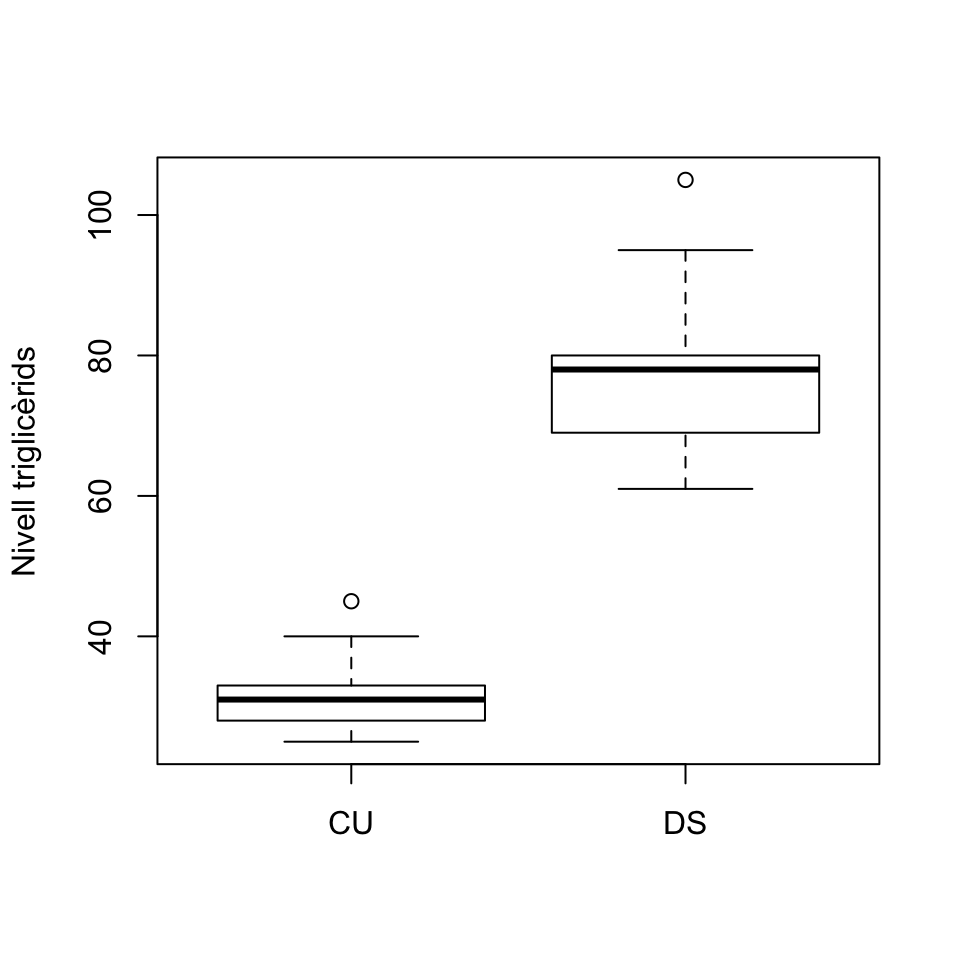
L’exemple següent és un tipus de pregunta que més endavant ens preocuparà molt.
Exemple 3.4 L’alçada d’una espècie de matolls té valor mitjà 115 cm, amb una desviació típica de 25 cm. Si prenem una mostra aleatòria simple de 100 matolls d’aquesta espècie, quina és la probabilitat que la mitjana mostral de les alçades sigui més petita que 110 cm?
Diguem \(X\) a la variable aleatòria definida per les alçades d’aquests matolls. Pel Teorema Central del Límit, la mitjana mostral \(\overline{X}\) de mostres aleatòries simples de 100 alçades segueix una distribució \(N(115,25/\sqrt{100})=N(115,2.5)\). Llavors, la probabilitat que ens demanen és \[ P(\overline{X}< 110) \] que podem calcular amb
## [1] 0.0228Un 2.28% de les mostra aleatòries simples de 100 matolls d’aquesta espècie tenen la mitjana de les alçades més petita que 110 cm.
3.3 Proporció mostral
Suposem que ara tenim una variable aleatòria poblacional \(X\) que és Bernoulli amb probabilitat d’èxit \(p_X\). \(X\) pren els valors 1 (èxit) o 0 (fracàs). Recordau que \(E(X)=p_X\) i \(\sigma_X=\sqrt{p_X(1-p_X)}\).
Sigui \(X_1,\ldots,X_n\) una mostra aleatòria simple de mida \(n\) de \(X\) i sigui \(S_n=\sum_{i=1}^n X_i\) el nombre d’èxits observats en aquesta mostra.
La proporció mostral d’èxits de la nostra mostra és \[ \widehat{p}_X=\frac{S_n}{n}=\frac{\sum_{i=1}^n X_i}{n}. \]
Fixau-vos que \(\widehat{p}_X\) és un cas particular de la mitjana mostral \(\overline{X}\), per tant per a les proporcion mostrals val tot el que hem dit fins ara per a mitjanes mostrals:
Teorema 3.4 Si \(X\) és una variable aleatòria Bernoulli amb probabilitat d’èxit \(p_X\) i \(X_1,\ldots,X_n\) és una mostra aleatòria de mida \(n\) de \(X\), de proporció mostral \(\widehat{p}_X\), aleshores
\(\mu_{\widehat{p}_X}=p_X\)
\(\sigma_{\widehat{p}_X}=\sqrt{\dfrac{p_X(1-p_X)}{n}}\)
Pel Teorema Central del Límit, si la mida \(n\) de la mostra és gran, la distribució de \(\widehat{p}_X\) és aproximadament la d’una variable normal \[ N\left({p}_X,\sqrt{\frac{{p}_X(1-{p}_X)}{n}}\right) \] i per tant \[ \frac{\widehat{p}_X-p_X}{\sqrt{\frac{{p}_X(1-{p}_X)}{n}}} \] és aproximadament \(N(0,1)\).
Alguns comentaris:
\(\mu_{\widehat{p}_X}=p_X\): Si repetíssim moltes vegades el procés de prendre una mostra aleatòria simple de mida \(n\) d’una variable aleatòria de Bernoulli \(X\) i calcular-ne la proporció mostral d’èxits, molt probablement la mitjana d’aquestes proporcions mostrals s’acostaria molt a \(p_X\)
En particular, \(\widehat{p}_X\) serveix per estimar \(p_X\)
\(\sigma_{\widehat{p}_X}= \sqrt{{p_X(1-p_X)}/{n}}\): la variabilitat dels resultats de \(\widehat{p}_X\) decreix amb \(n\) i tendeix a 0 quan \(n\to \infty\). Pel que fa a la dependència de \(\sigma_{\widehat{p}_X}\) respecte de \(p_X\) si la \(n\) és fixada, observau al gràfic següent que \(\sqrt{p_X(1-p_X)}\) creix entre 0 i 0.5 i decreix entre 0.5 i 1, assolint el valor màxim a \(p_X=0.5\).
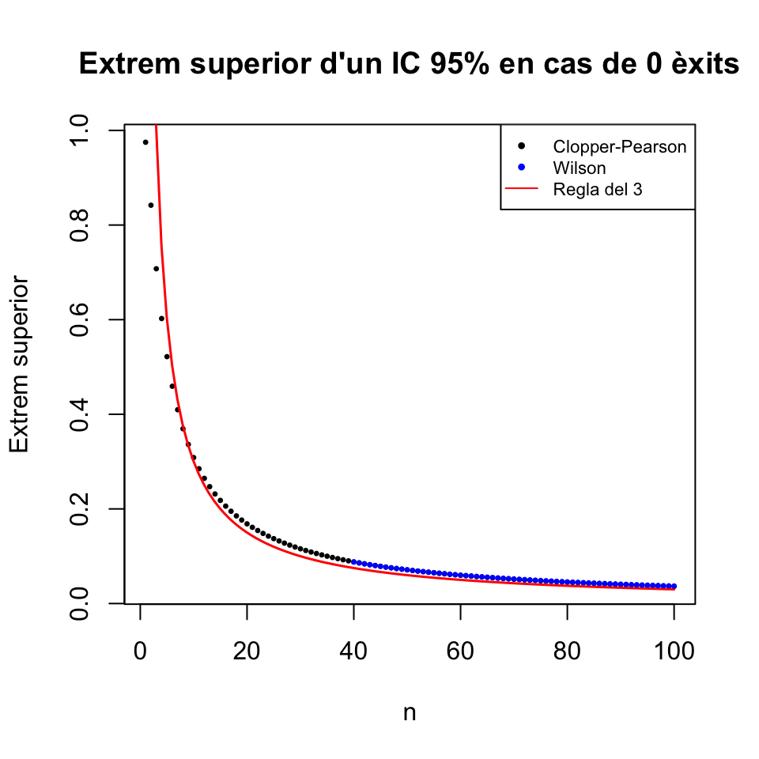
\(\sqrt{{p_X(1-p_X)}/{n}}\) és l’error estándard, o típic, de \(\widehat{p}_X\). L’estimam amb l’error estándard, o típic, de la mostra \(\sqrt{{\widehat{p}_X(1-\widehat{p}_X)}/{n}}\).
A partir d’ara, sovint cometrem l’abús de llenguatge d’ometre l’adverbi “aproximadament” de l’apartat (3) del teorema anterior, i direm simplement que si \(n\) és gran, \(\widehat{p}_X\) és normal. Però, repetim, hem de recordar que aquest “és normal” en realitat vol dir “la seva distribució és aproximadament la d’una variable normal”.
Exemple 3.5 Tornem una altra vegada a la situació dels Exemples 3.1 i 3.3. Traduïm el fitxer de notes de tests en un vector binari: 0 per suspens (haver tret menys de 50) i 1 per aprovat (haver tret 50 o més):
# Iniciam totes les notes a 1
aprovs=rep(1,length(tests))
# Posam 0 on la nota del test és suspesa
aprovs[which(tests<50)]=0Aquest vector aprovs el podem entendre com una població de Bernoulli de probabilitat poblacional d’èxit (aprovat) \(p_X\). Les proporcions de suspesos i aprovats són:
## aprovs
## 0 1
## 0.4054 0.5946Per tant, \(p_X\) és:
## [1] 0.5946Ara n’extreurem 105 mostres aleatòries simples de mida 40, en calcularem les proporcions mostrals d’aprovats i comprovarem si es confirmen les conclusions del teorema anterior.
La mitjana d’aquest vector de proporcions hauria de ser propera a la proporció poblacional d’aprovats \(p_X=0.5946\).
## [1] 0.5942Vegem ara la seva desviació típica:
## [1] 0.0774Pel Teorema 3.4, sabem que això hauria de ser proper a \(\sqrt{p_X(1-p_X)/n}\)
## [1] 0.0776I pel Teorema Central del Límit, aquestes proporcions mostrals haurien de seguir aproximadament una distribució normal $N(p_X,). Vegem-ho amb un histograma:
fact.trans.p=hist(props.mostrals,plot=FALSE)$counts[1]/hist(props.mostrals,plot=FALSE)$density[1]
hist(props.mostrals,col="light blue",xlab="Proporcions mostrals",
ylab="Freqüències",main="Histograma de la mostra de proporcions")
curve(fact.trans.p*dnorm(x,p_X,sqrt(p_X*(1-p_X)/40)),
col="red",lwd=2,add=TRUE)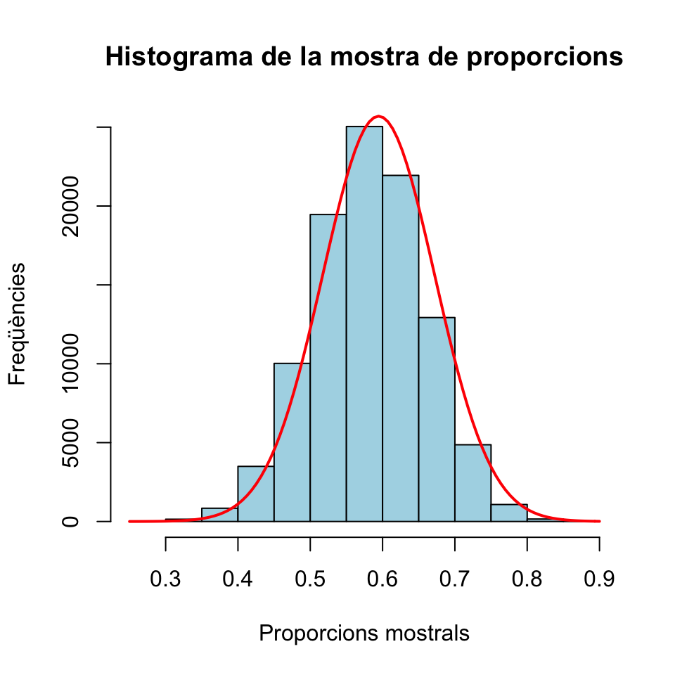
I això que la mida de les mostres, 40, no és especialment gran.
Exemple 3.6 Un 59.1% dels estudiants de la UIB són dones. Hem pres una mostra més o menys aleatòria de 60 estudiants de la UIB i hi hem trobat 40 dones, un 66.67%. Ens demanam si 40 de 60 és una quantitat raonable de dones en una mostra aleatòria simple d’estudiants de la UIB, o si són moltes (atès que hi esperaríem al voltant d’un 59% de dones).
Aquesta pregunta, que serà molt típica d’aquí a pocs temes, la traduïm en la següent pregunta:
Si prenem una mostra aleatòria simple de 60 estudiants, quina és la probabilitat que la proporció mostral de dones sigui superior al 66.67%?
La manera més correcta de resoldre respondre aquesta qüestió és emprar que el nombre \(S_{60}\) de dones en mostres aleatòries simples de 60 estudiants de la UIB segueix de manera exacta una distribució binomial \(B(60,0.591)\). Com que el 66.67% de la pregunta en realitat representa 40 dones, la probabilitat demanada és exactament
## [1] 0.1441Això ens diu que, de mitjana, 1 de cada 7 mostres aleatòries simples de 60 estudiants de la UIB conté almenys 40 dones.
Una altra opció seria aprofitar el Teorema Central del Límit, segons el qual la proporció mostral \(\widehat{p}_X\) de dones en mostres aleatòries simples de 60 estudiants de la UIB segueix una distribució aproximadament normal amb \(\mu=0.591\) i \[ \sigma=\sqrt{\dfrac{0.591(1-0.591)}{60}}=0.0635 \] Per tant, la probabilitat que \(\widehat{p}_X\geq 0.6667\) és (recordau, aproximadament)
## [1] 0.1166Hauria estat més astut emprar a més la correcció de continuïtat. Com que \(\widehat{p}_X=S_{60}/60\), seria millor aproximar \[ P(S_{60}\geq 40)=1-P(S_{60}\leq 39) \] per, si diem \(Y\) a la normal \(N(0.591,0.0635)\), \[ 1-P(Y\leq 39.5/60) \]
## [1] 0.1445En el cas de la proporció mostral, de vegades permetrem prendre mostres aleatòries sense reposició. En aquest cas, la distribució del nombre d’èxits en una mostra segueix una distribució hipergeomètrica. D’aquí deduïm que seguim tenint que \(E(\widehat{p}_X)=p_X\), però ara, si \(N\) és la mida de la població, \[ \sigma({\widehat{p}_X})=\sqrt{\frac{p_X(1-p_X)}{n}}\cdot \sqrt{\frac{\vphantom{(p_X}N-n}{N-1}}. \] Recordau que al factor \[ \sqrt{\frac{N-n}{N-1}} \] que transforma \(\sigma({\widehat{p}_X})\) per a mostres aleatòries simples en la desviació típica de \({\widehat{p}_X}\) per a mostres aleatòries sense reposició li diem el factor de població finita, i és el que transformava la desviació típica d’una variable binomial (que compta èxits en mostres aleatòries simples) en la desviació típica d’una variable hipergeomètrica (que compta èxits en mostres aleatòries sense reposició).
Prenguem ara 105 mostres aleatòries sense reposició de 40 notes de tests.
Un altre cop, la mitjana d’aquest vector de proporcions mostrals hauria de ser propera a la proporció poblacional d’aprovats \(p_X=0.5946\).
## [1] 0.5942Calculem ara la desviació típica d’aquest vector:
## [1] 0.0691Pel que acabam d’explicar, la desviació típica d’aquest vector de proporcions mostrals de mostres sense reposició hauria de ser molt propera a
\[
\sqrt{\frac{p_X(1-p_X)}{n}}\cdot\sqrt{\frac{\vphantom{(p_X}N-n}{N-1}}
\]
on \(N\) és la mida de la població, és a dir, la longitud del vector aprovs, i \(n\) la mida de les mostres. Vegem si és veritat:
## [1] 0.06893.4 Variància mostral
Donada una variable aleatòria \(X\), direm:
Variància mostral de (mostres de) mida \(n\), \(\widetilde{S}_{X}^2\), a la variable aleatòria que consisteix a prendre una mostra aleatòria simple de mida \(n\) de \(X\) i calcular la variància mostral dels seus valors.
Desviació típica mostral de (mostres de) mida \(n\), \(\widetilde{S}_{X}\), a la variable aleatòria que consisteix a prendre una mostra aleatòria simple de mida \(n\) de \(X\) i calcular la desviació típica mostral dels seus valors.
Formalment, sigui \(X_1,\ldots, X_n\) una mostra aleatòria simple de mida \(n\) d’una variable aleatòria \(X\) d’esperança \(\mu_X\) i desviació típica \(\sigma_X\). Aleshores \[ \widetilde{S}_{X}^2=\frac{\sum_{i=1}^n (X_{i}-\overline{X})^2}{n-1},\quad \widetilde{S}_{X}=+\sqrt{\widetilde{S}_{X}^2} \] A més, de tant en tant també farem servir la variància i la desviació típica “a seques”: \[ \begin{array}{l} \displaystyle S^2_{X}=\frac{\sum_{i=1}^n (X_{i}-\overline{X})^2}{n}=\frac{(n-1)}{n}\widetilde{S}^2_{X}\\ \displaystyle S_X=+\sqrt{S_X^2} \end{array} \]
La variància (a seques) admet la següent expressió senzilla: \[ S^2_X=\frac{\sum_{i=1}^n X_{i}^2}{n}-\overline{X}^2 \]
En efecte: \[ \begin{array}{l} \displaystyle \frac{\sum_{i=1}^n (X_{i}-\overline{X})^2}{n}=\frac{1}{n}\sum_{i=1}^n (X_{i}^2-2\overline{X}X_i+\overline{X}^2)\\ \displaystyle\qquad = \frac{1}{n}\Big(\sum_{i=1}^n X_{i}^2-2\overline{X}\sum_{i=1}^n X_{i}+n\overline{X}^2\Big)\\ \displaystyle\qquad =\frac{\sum_{i=1}^n X_{i}^2}{n}-2\overline{X}\frac{\sum_{i=1}^n X_{i}}{n}+\frac{n\overline{X}^2}{n}\\ \displaystyle\qquad =\frac{\sum_{i=1}^n X_{i}^2}{n}-2\overline{X}\cdot\overline{X} + \overline{X}^2=\frac{\sum_{i=1}^n X_{i}^2}{n}- \overline{X}^2 \end{array} \]
Tenim els dos resultats següents. El primer ens diu que esperam que la variància mostral d’una mostra aleatòria simple de \(X\) valgui \(\sigma_{X}^2\), en el sentit usual que si prenem mostres aleatòries simples de \(X\) de mida \(n\) gran i calculam les seves variàncies mostrals, molt probablement obtenim de mitjana un valor molt proper a \(\sigma_{X}^2\).
El segon resultat ens diu que si la variable \(X\) és normal, un múltiple adequat de \(\widetilde{S}_{X}^2\) té distribució mostral coneguda, la qual cosa ens permetrà calcular probabilitats d’e successos’esdeveniments relatius a \(\widetilde{S}_{X}^2\)..
Teorema 3.6 Si \(X\) es \(N(\mu_X,\sigma_X)\) y prenem mostres de mida \(n\), la variable aleatòria \[ \frac{(n-1)\widetilde{S}_{X}^2}{\sigma_{X}^2} \] té distribució coneguda: \(\chi_{n-1}^2\) (es llegeix khi quadrat amb \(n-1\) graus de llibertat).

De la distribució \(\chi_\nu^2\), on \(\nu\) són els graus de llibertat, heu de saber que:
Per definició, és la distribució de la suma dels quadrats de \(\nu\) variables aleatòries normals estàndard independents. És a dir, si \(Z_{1},Z_{2},\ldots, Z_{\nu}\) són variables \(N(0,1)\) independents, la variable \[ Z_{1}^{2}+Z_{2}^{2}+\cdots +Z_{n}^{2} \] té distribució \(\chi_\nu^2\).
Per tant, és una distribució contínua
La \(\nu\) és el paràmetre del que depèn la seva densitat
Amb R és
chisqSi \(X_\nu\) és una variable aleatòria amb distribució \(\chi_\nu^2\), aleshores \(\mu_{X_\nu}=\nu\) i \(\sigma_{X_\nu}^2=2 \nu\)
Per a \(\nu\) petits, la distribució d’una \(\chi_{n}^2\) és asimètrica amb una cua a la dreta, i a mida que \(\nu\) creix, (com que és la distribució d’una suma de \(\nu\) variables aleatòries) pel Teorema Central del Límit es va aproximant a una distribució normal \(N(n,\sqrt{2n})\), com podeu veure als gràfics següents
curve(dchisq(x,1),col=1,lwd=2,xlim=c(0,20),xlab="",ylab="",ylim=c(0,0.3),main="Algunes khi quadrat")
curve(dchisq(x,2),col=2,lwd=2,add=TRUE)
curve(dchisq(x,3),col=3,lwd=2,add=TRUE)
curve(dchisq(x,4),col=4,lwd=2,add=TRUE)
curve(dchisq(x,5),col=5,lwd=2,add=TRUE)
curve(dchisq(x,10),col=6,lwd=2,add=TRUE)
legend("topright",col=1:6,lty=c(1,1),
lwd=c(2,2),legend=paste("n=",c(1:5,10),sep=""),cex=0.8)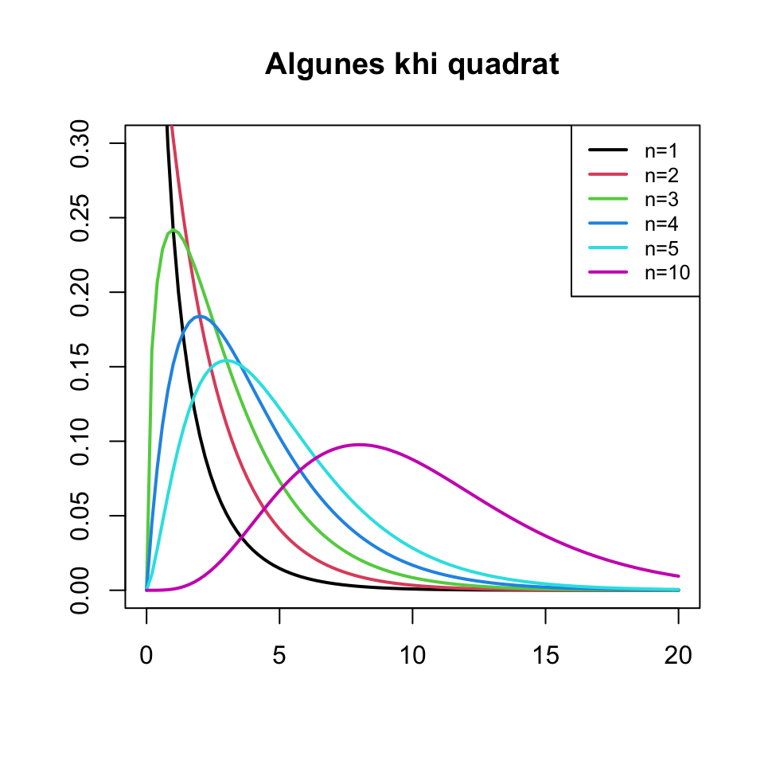
curve(dchisq(x,300),xlim=c(150,450),lwd=2,xlab="",ylab="",main="Khi quadrat vs Normal")
curve(dnorm(x,300,sqrt(600)),lwd=2,col="red",add=TRUE)
legend("topleft",col=c("black","red"),lty=c(1,1),
lwd=c(2,2),legend=c("Khi quadrat amb n=300","Normal"),cex=0.7)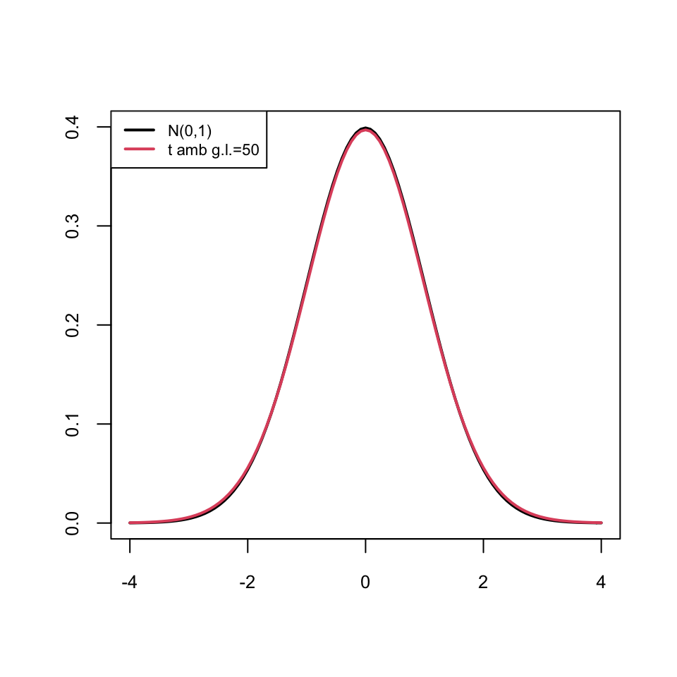
Tornem un instant a això dels graus de llibertat. Per què diem que la variància (mostral o a seques) té \(\nu-1\) graus de llibertat?
Doncs perquè si volem construir un conjunt de \(n\) nombres \(x_1,\ldots,x_\nu\) que tenguin variància un valor donat, posem \(y_0\), aleshores en principi podem escollir \(\nu-1\) d’ells, \(x_1,\ldots,x_{\nu-1}\), com volguem i aleshores el darrer, \(x_\nu\), queda bastant fixat. En matemàtiques això se sol expressar dient que “tenim \(\nu-1\) graus de llibertat a l’hora d’escollir \(x_1,\ldots,x_\nu\) amb variància fixada \(y_0\)”.
En efecte, si fixam el valor \(y_0\geq 0\) de la variància i volem trobar \(x_1,\ldots,x_{\nu}\) tals que \[ y_0=\frac{\sum_{i=1}^\nu (x_i-\overline{x})^2}{n}=\frac{\sum_{i=1}^\nu x_i^2}{\nu}-\overline{x}^2 \] vegem que per a qualssevol valors de \(x_1,\ldots,x_{\nu-1}\), el valor de \(x_\nu\) queda fixat per una equació quadràtica: \[ \begin{array}{l} \nu y_0 & =\displaystyle \sum_{i=1}^\nu x_i^2-\nu\overline{x}^2= \sum_{i=1}^\nu x_i^2-\nu\Big(\frac{\sum_{i=1}^\nu x_i}{\nu}\Big)^2\\ & =\displaystyle \sum_{i=1}^\nu x_i^2-\frac{(\sum_{i=1}^\nu x_i)^2}{\nu}\\ & \displaystyle =\frac{1}{\nu}\left(\nu\sum_{i=1}^\nu x_i^2-\Big(\sum_{i=1}^{\nu} x_i\Big)^2\right)\\ & =\displaystyle \frac{1}{\nu}\left(\nu\sum_{i=1}^{\nu-1} x_i^2+\nu\mathbf{x_\nu}^2-\Big(\sum_{i=1}^{\nu-1} x_i\Big)^2\right.\\ & \displaystyle\qquad\qquad \left. -2\Big(\sum_{i=1}^{\nu-1} x_i\Big)\mathbf{x_\nu}-\mathbf{x_\nu}^2\right)\\ & =\displaystyle \frac{1}{\nu}\left((\nu-1)\mathbf{x_\nu}^2-2\Big(\sum_{i=1}^{\nu-1} x_i\Big)\mathbf{x_\nu}\right.\\ & \displaystyle\qquad\qquad \left.+\nu\sum_{i=1}^{\nu-1} x_i^2-\Big(\sum_{i=1}^{\nu-1} x_i\Big)^2 \right) \end{array} \] d’on (multiplicant els dos costats de la igualtat per \(\nu\) i dividint-los per \(\nu-1\)) obtenim, finalment, l’equació de segon grau en \(\mathbf{x_\nu}\) \[ \mathbf{x_\nu}^2-\frac{2\sum_{i=1}^{\nu-1} x_i}{\nu-1}\mathbf{x_\nu}+\frac{\nu\sum_{i=1}^{\nu-1} x_i^2-\Big(\sum_{i=1}^{\nu-1} x_i\Big)^2-\nu^2y_0^2}{\nu-1}=0 \] Per tant, fixat \(y_0\) i un cop escollits \(x_1,\ldots,x_{\nu-1}\), el darrer valor \(x_\nu\) ha de ser per força una solució d’aquesta equació de segon grau.
Fixau-vos que aquesta equació no sempre té solució real, perquè pot tenir el discriminant negatiu. Per tant exageràvem un poc dient que podíem triar \(x_1,\ldots,x_{\nu-1}\) “com volguem”. Per exemple, si voleu que la variància sigui 0 i preneu \(x_1,\ldots,x_{\nu-1}\) no tots iguals, podeu estar ben segurs que no trobareu cap \(x_\nu\) que satisfaci aquesta equació: per tenir variància 0, \(x_1,\ldots,x_\nu\) han de ser tots iguals. Però el que ha de quedar clar és que un cop escollits \(x_1,\ldots,x_{\nu-1}\), el valor de \(x_\nu\) ja no pot ser qualsevol, pot prendre com a màxim dos valors diferents.Anau alerta:
Si la variable poblacional \(X\) no és normal, la conclusió del Teorema 3.6 no és vertadera.
Encara que \(X\) sigui normal, \(E(\widetilde{S}_{X})\neq \sigma_{X}\).
Ja ho hem comentat abans. Si \(S^2_{X}\) és la variància “a seques” (dividint per \(n\) en comptes de per \(n-1\)), \(E(S^2_{X})\neq \sigma^2_{X}\).
pesos.SIDA següent:
pesos.SIDA=c(2466, 3941, 2807, 3118, 2098, 3175, 3515, 3317, 3742, 3062, 3033, 2353, 2013, 3515, 3260, 2892, 1616, 4423, 3572, 2750, 2807, 2807, 3005, 3374, 2722, 2495, 3459, 3374, 1984, 2495, 3062, 3005, 2608, 2353, 4394, 3232, 2013, 2551, 2977, 3118, 2637, 1503, 2438, 2722, 2863, 2013, 3232, 2863)Quina és la probabilitat que una mostra (aleatòria simple) de pesos de recent nats de la mateixa mida que aquesta tengui una desviació típica mostral més petita que la d’aquesta mostra?
La variable d’interès és \(X\): Prenem un recent nat i pesam el seu pes en g. Ens diuen que és normal amb \(\sigma=800\). Mirem la nostra mostra de pesos:
## [1] 48## [1] 623.4Sigui \(\widetilde{S}_X\) la desviació típica mostral de mida 48 de la variable \(X\). Ens demanen \(P(\widetilde{S}_X<623.4)\). Això tal qual no ho sabem calcular, perquè no sabem la distribució de probabilitats de \(\widetilde{S}_X\). Però sí que sabem la distribució de \[ \frac{(n-1)\widetilde{S}_{X}^2}{\sigma_{X}^2}= \frac{47\widetilde{S}_{X}^2}{800^2} \] Aquesta variable té distribució \(\chi_{47}^2\). Per tant el que hem de fer és traduir la probabilitat que volem calcular en termes d’aquesta variable: \[ P(\widetilde{S}_X<623.4)=P\Big(\frac{47\widetilde{S}_{X}^2}{800^2}<\frac{47\cdot 623.4^2}{800^2}\Big)=P(\chi_{47}^2<28.54) \] i això val
## [1] 0.0153Per tant, només un 1.5% de les mostres de 47 recent nats tenen una desviació típica mostral més petita que la de la nostra mostra de recent nats amb SIDA.
3.5 La distribució t de Student
Recordau que si la variable poblacional \(X\) és \(N(\mu_X,\sigma_X)\) i prenem mostres aleatòries simples de mida \(n\), la variable \[ \frac{\overline{X}-\mu_X}{\sigma_{X}/\sqrt{n}} \] és normal estàndard. Des del punt de vista teòric això és útil per obtenir fórmules, però normalment no ens serveix per calcular la probabilitat que a \(\overline{X}\) li passi qualque cosa, perquè gairebé mai sabrem la desviació típica poblacional \(\sigma_{X}\). Què passa si l’estimam per mitjà de \(\widetilde{S}_{X}\) amb la mateixa mostra amb la qual calculam \(\overline{X}\)? Doncs que el resultat següent ens salva el dia, perquè la variable que obtenim té distribució coneguda.
Teorema 3.7 Sigui \(X\) una variable \(N(\mu_X, \sigma_X)\). Si prenem mostres aleatòries simples de mida \(n\), la variable aleatòria \[ T=\frac{\overline{X}-\mu_X}{\widetilde{S}_{X}/\sqrt{n}} \] segueix una distribució coneguda, anomenada t de Student amb \(n-1\) graus de llibertat, \(t_{n-1}\).
De la distribució t de Student amb \(n\) graus de llibertat, \(t_{\nu}\), heu de saber que:
És contínua
Amb R és
tEl nombre de graus de llibertat \(\nu\) és un paràmetre del que depèn la seva distribució
Si \(T_{\nu}\) és una variable amb distribució \(t_{\nu}\), aleshores \(\mu_{T_{\nu}}=0\) i \(\sigma_{T_{\nu}}^2=\nu/(\nu-2)\) (en realitat això només és veritat si \(\nu\geq 3\), però no fa falta recordar-ho).
La funció de densitat d’una variable \(T_{\nu}\) és simètrica al voltant de 0 (com la d’una \(N(0,1)\)): \[ P(T_{\nu}\leq -x)=P(T_{\nu}\geq x)=1-P(T_{\nu}\leq x) \]
Si \(\nu\) és gran, la distribució d’una variable \(T_{\nu}\) és aproximadament la d’una \(N(0,1)\) (però amb més variància: un poc més aplatada), com podeu veure als gràfics següents:
curve(dnorm(x),col=1,lwd=2,xlim=c(-4,4),xlab="",ylab="",ylim=c(0,0.4),
main="Algunes t de Student")
curve(dt(x,2),col=2,lwd=2,add=TRUE)
curve(dt(x,3),col=3,lwd=2,add=TRUE)
curve(dt(x,4),col=4,lwd=2,add=TRUE)
curve(dt(x,5),col=5,lwd=2,add=TRUE)
curve(dt(x,10),col=6,lwd=2,add=TRUE)
legend("topleft",col=1:6,lty=rep(1,6), lwd=rep(2,6),
legend=c("N(0,1)", paste("t amb g.l.=",c(2:5,10),sep="")),cex=0.7)
curve(dnorm(x),col=1,lwd=2,xlim=c(-4,4),xlab="",ylab="",ylim=c(0,0.4),
main="t vs Normal estàndard")
curve(dt(x,50),col=2,lwd=2,add=TRUE)
legend("topleft",col=1:2,lty=rep(1,2), lwd=rep(2,2),
legend=c("N(0,1)", "t amb g.l.=50"),cex=0.7)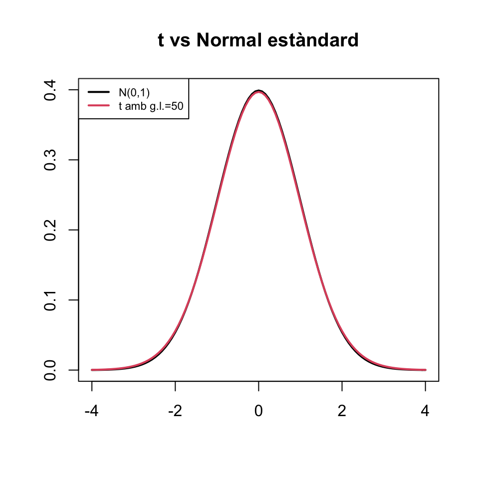
El fet que una t de Student sigui més aplatada que una normal estàndard \(Z\) implica que les cues de la t tenen major probabilitat que les de \(Z\) (fixau-vos que als gràfics anteriors els extrems de les densitats de les t estan per damunt dels de la de \(Z\)), la qual cosa es tradueix en el fet que és més probable obtenir valors lluny del 0 amb una t de Student que amb una \(N(0,1)\).
Indicarem amb \(t_{\nu,q}\) el \(q\)-quantil d’una variable aleatòria \(T_{\nu}\) que segueix una distribució \(t_\nu\). És a dir, \(t_{\nu,q}\) és el valor tal que \[ P(T_{\nu}\leq t_{\nu,q})=q \] Per la simetria de la distribució \(t_\nu\), \[ t_{\nu,q}=-t_{\nu,1-q}. \]
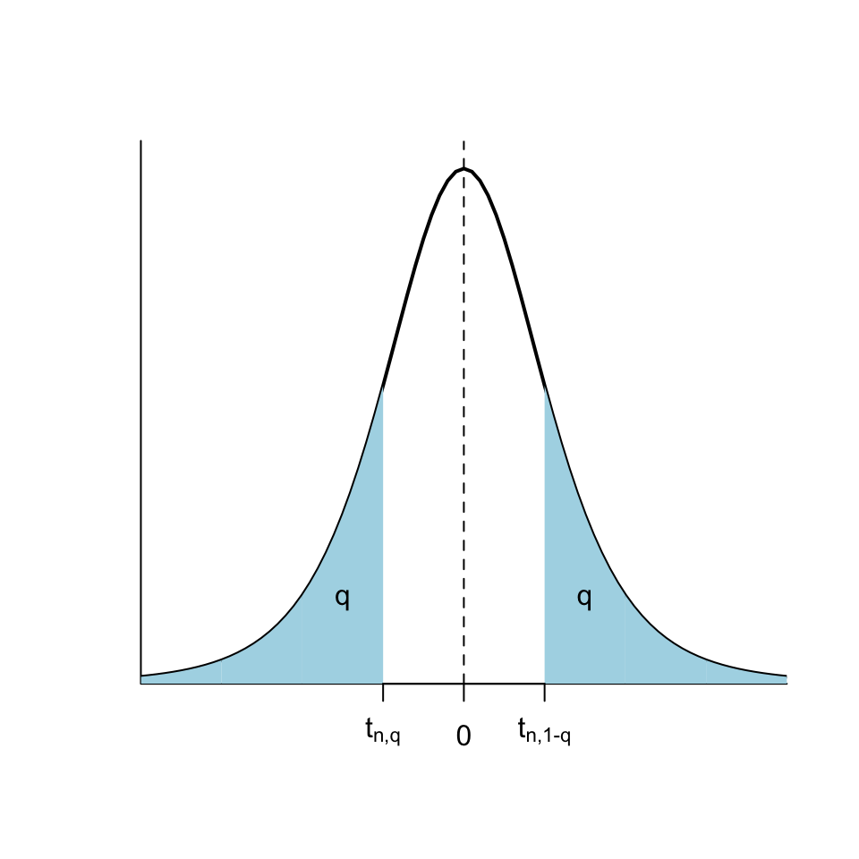
Hi ha algunes propietats dels quantils de la t de Student que heu de saber, per poder aplicar-les quan no tengueu a l’abast R o una apli per calcular quantils:
- \(t_{\nu ,q}\approx z_{q}\) si \(\nu\) és molt gran, posem \(\nu \geq 200\). Per exemple
## [1] 1.9719## [1] 1.95996\(t_{\nu,0.95}\) (per a \(10\leq \nu\leq 200\)) està entre 1.65 i 1.8; ho podeu aproximar \(t_{n,0.95}\approx 1.7\)
\(t_{n,0.975}\) (per a \(10\leq n\leq 200\)) està entre 1.97 i 2.2; ho podeu aproximar \(t_{n,0.975}\approx 2\)
Abans de tancar aquesta secció, recordau que, donada una variable aleatòria \(X\), no heu de confondre:
Desviació típica (o estàndard) de la variable aleatòria, \(\sigma_X\): El paràmetre poblacional, normalment desconegut
Desviació típica (o estàndard) (sigui mostral, \(\widetilde{S}_X\), o a seques, \(S_X\)) d’una mostra: L’estadístic que calculam sobre la mostra i que quantifica la dispersió de la mostra
Error típic (o estàndard) d’un estimador: La desviació típica de la variable aleatòria que defineix l’estimador, normalment desconeguda
Error típic (o estàndard) d’una mostra: Estimació de l’error típic de la mitjana mostral (o de la proporció mostral) a partir d’una mostra; servirà per calcular intervals de confiança. És \(\widetilde{S}_X/\sqrt{n}\).
3.6 “Bons” estimadors
3.6.1 Estimadors no esbiaixats
Un estimador puntual \(\widehat{\theta}\) d’un paràmetre poblacional \(\theta\) és no esbiaixat (insesgado, en castellà) quan el seu valor esperat és precisament el valor poblacional del paràmetre, és a dir, quan \[ \mu_\widehat{\theta}=\theta \] Es diu aleshores que l’estimació puntual és no esbiaixada.
El biaix d’un estimador \(\widehat{\theta}\) d’un paràmetre \(\theta\) és la diferència \(\mu_\widehat{\theta}-\theta\)
Exemples: Ja hem vist a les seccions anteriors que
\(\mu_{\overline{X}}=\mu_X\). Per tant, \(\overline{X}\) és sempre un estimador no esbiaixat de \(\mu_X\)
\(\mu_{\widehat{p}_X}=p_X\). Per tant, \(\widehat{p}_X\) és sempre un estimador no esbiaixat de \(p_X\)
\(\mu_{\widetilde{S}_{X}^2}=\sigma_X^2\) si \(X\) és normal. Per tant, \(\widetilde{S}_{X}^2\) és un estimador no esbiaixat de \(\sigma_X^2\) quan \(X\) és normal
Com que \({S}_{X}^2=\dfrac{n-1}{n}\widetilde{S}_{X}^2\), tenim que \(\mu_{{S}_{X}^2}=\dfrac{n-1}{n}\sigma_X^2\) si \(X\) és normal. Per tant, en aquest cas, \({S}_{X}^2\) és un estimador esbiaixat de \(\sigma_X^2\), amb biaix \[ \mu_{{S}_{X}^2}-\sigma_X^2=\dfrac{n-1}{n}\sigma_X^2-\sigma_X^2=-\dfrac{\sigma_X^2}{n}\ \mathop{\longrightarrow}_{\scriptscriptstyle n\to\infty}\ 0 \] Diem en aquest cas que el biaix tendeix a 0.
\(\mu_{\widetilde{S}_{X}}, \mu_{{S}_{X}}\neq \sigma_X\) ni tan sols quan \(X\) és normal. Per tant, \(\widetilde{S}_{X}\) i \({S}_{X}\) són estimadors esbiaixats de \(\sigma_X\)
3.6.2 Estimadors eficients
Donats dos estimadors \(\widehat{\theta}_1\), \(\widehat{\theta}_2\) del mateix paràmetre \(\theta\), direm que \(\widehat{\theta}_1\) és més eficient, o més precís, que \(\widehat{\theta}_2\) quan l’error típic de \(\widehat{\theta}_1\) és més petit que el de \(\widehat{\theta}_2\): \[ \sigma(\widehat{\theta}_1)< \sigma(\widehat{\theta}_2). \]
Normalment, només comparam l’eficiència de dos estimadors quan són no esbiaixats (o, com a molt, quan el seu biaix tendeix a 0). En aquest cas, que \(\widehat{\theta}_1\) sigui més eficient que \(\widehat{\theta}_2\) significa que la seva variabilitat és menor i que per tant les estimacions amb \(\widehat{\theta}_1\) es concentren més al voltant del seu valor esperat, que és el paràmetre \(\theta\) que volem estimar, que les estimacions amb \(\widehat{\theta}_2\).
Exemples:
Si \(X\) és normal, \(\overline{X}\) és l’estimador no esbiaixat més eficient de la mitjana poblacional \(\mu_X\).
Si \(X\) és Bernoulli, \(\widehat{p}_X\) és l’estimador no esbiaixat més eficient de la proporció poblacional \(p_X\).
Si \(X\) és normal, \(\widetilde{S}_X^2\) és l’estimador no esbiaixat més eficient de la variància poblacional \(\sigma_X^2\).
Exemple 3.9 Sigui \(X\) una variable aleatòria normal \(N(\mu_X,\sigma_X)\). Considerem la mediana \(\mathit{Me}=Q_{0.5}\) d’una mostra aleatòria simple de \(X\) com a estimador puntual de \(\mu_X\), que coincideix amb la mediana de \(X\) per la simetria de les variables normals.
Resulta que \(\mu_{\mathit{Me}}=\mu_X\) però \[ \sigma^2(\mathit{Me})\approx \dfrac{\pi}{2}\cdot \dfrac{\sigma_{X}^2}{n}\approx 1.57 \cdot \frac{\sigma_{X}^2}{n}=1.57\sigma^2_{\overline{X}} \]
Per tant, si \(X\) és normal, la mediana \(\mathit{Me}\) és un estimador no esbiaixat de \(\mu_X\), però menys eficient que \(\overline{X}\). Per això preferim emprar la mitjana mostral per estimar \(\mu_X\).
Hem dit que si la població és normal, \(\widetilde{S}_X^2\) és l’estimador no esbiaixat més eficient de la variància poblacional \(\sigma_X^2\). La variància a seques
\[
S_X^2=\frac{(n-1)}{n} \widetilde{S}_X^2
\]
és més eficient, perquè
\[
\sigma(S_X^2)=\sqrt{\frac{(n-1)}{n}}\sigma(\widetilde{S}_X^2)<\sigma(\widetilde{S}_X^2),
\]
però és un estimador esbiaixat de \(\sigma_X^2\), amb biaix que tendeix a 0.
3.6.3 Estimadors màxim versemblants
Un estimador d’un paràmetre és màxim versemblant quan, aplicat a una mostra aleatòria simple d’una mida \(n\) fixada, dóna el valor del paràmetre que fa màxima la probabilitat d’obtenir aquesta mostra.
En realitat, el que fa màxim l’estimació màxim versemblant d’un paràmetre és el producte dels valors de la funció densitat de la variable aleatòria poblacional aplicada als elements de la mostra. Quan la variable aleatòria és discreta, això coincideix amb el que hem dit, perquè la probabilitat d’obtenir un valor concret és la funció densitat aplicada a aquest valor. Però quan la variable aleatòria poblacional és contínua, la probabilitat d’obtenir una mostra concreta és sempre 0 i no té sentit parlar de maximitzar aquest 0. Per això es pren la funció densitat.
En aquest curs no ens complicarem la vida i entendrem que el que maximitzam és la probabilitat d’obtenir la mostra.Exemple 3.10 Suposem que tenim una variable aleatòria Bernoulli \(X\) de probabilitat d’èxit \(p_X\) desconeguda. Donada una mostra aleatòria simple \(x_1,\ldots,x_n\) de \(X\), siguin \(\widehat{p}_x\) la seva proporció mostral i
\[
P(x_1,\ldots,x_n\mid p_X=p)
\]
la probabilitat d’obtenir la mostra quan la probabilitat poblacional \(p_X\) és igual \(p\). Un estimador per a \(p_X\) és màxim versemblant quan, aplicat a cada mostra aleatòria simple \(x_1,\ldots,x_n\) de \(X\), ens dóna el valor de \(p\) que fa que
\[
P(x_1,\ldots,x_n\mid p_X=p)
\]
sigui el màxim possible.
Quin creieu que és l’estimador màxim versemblant de \(p_X\)? Doncs sí, la proporció mostral \(\widehat{p}_X\).
Teorema 3.8 El valor de \(p\) per al qual \(P(x_1,\ldots,x_n\mid p)\) és màxim és \(\widehat{p}_x\).
Alguns altres estimadors màxim versemblants:
\(\overline{X}\) és l’estimador màxim versemblant del paràmetre \(\lambda\) d’una variable aleatòria Poisson
\(\overline{X}\) és l’estimador màxim versemblant de la mitjana \(\mu\) d’una variable aleatòria normal
3.7 Estimació de poblacions
3.7.1 Estimació de poblacions numerades
Exemple 3.11 Un dia vaig voler estimar quants taxis hi havia a Palma. Per fer-ho, assegut en un bar del Passeig Marítim vaig apuntar les llicències dels 40 primers taxis que passaren. Els entraré directament en un vector de R.
taxis=c(1217,600,883,1026,150,715,297,137,508,134,38,961,538,1154,314,1121,823,158,940,99,
977,286,1006,1207,264,1183,1120,498,606,566,1239,860,114,701,381,836,561,494,858,187)
sort(taxis)## [1] 38 99 114 134 137 150 158 187 264 286 297 314 381 494 498
## [16] 508 538 561 566 600 606 701 715 823 836 858 860 883 940 961
## [31] 977 1006 1026 1120 1121 1154 1183 1207 1217 1239Puc estimar quants taxis hi ha a Palma a partir d’aquesta mostra? Us pot semblar una beneitura de pregunta, però aquest és un problema de rellevància històrica, com podeu consultar en aquest article.
La solució d’aquest problema és donada pel resultat següent:
Teorema 3.9 Sigui \(X\) una variable aleatòria uniforme sobre \(\{1,2,\ldots,N\}\), i sigui \(x_1,\ldots,x_n\) una mostra aleatòria de \(X\). Sigui \(m=\max(x_1,\ldots,x_n)\). Aleshores, l’estimador no esbiaixat més eficient de \(N\) és \[ \widehat{N}=m+\frac{m-n}{n} \]
Exemple 3.12 Continuem amb l’Exemple 3.11. Emprant la fórmula anterior, obtenim
## [1] 1268.97la qual cosa ens permet estimar que hi havia 1269 taxis a Palma. En realitat, consultant la web de l’Ajuntament, després vaig saber que en aquell moment n’hi havia 1246.
Exemple 3.13 Fem un experiment. Generarem a l’atzar una mida N d’una població grandeta, i suposarem que els individus de la població estan numerats de l’1 a l’N. A continuació, prendrem 100 mostres aleaòries sense reposició de la nostra població i amb cada una d’aquestes mostres estimarem la N emprant la fórmula que hem donat. Al final, calcularem la mitjana d’aquestes estimacions i la compararem amb el valor real de N, que no descobrirem fins el final.
Perquè l’experiment sigui reproductible, fixarem la llavor d’aleatorietat, però perquè no cregueu que fem trampes amb aquesta llavor, el que farem serà generar a l’atzar la llavor d’aleatorietat amb la funció sample.
## [1] 6283Ara generam la mida N de la població com un nombre a l’atzar entre 5000 i 10000.
Suposarem per tant que hi ha N individus a la nostra població, numerats de l’1 a l’N. Ara generarem 100 mostres aleatòries sense reposició d’aquesta població, i ens quedarem amb la mida i el valor màxim de cada una d’elles, que és l’únic que necessitam saber. Les mides les generarem a l’atzar entre, posem, 25 i 75:
Mostra=function(a,b,P){
#a i b: mides màxima i mínima de la mostra; P: mida de la població
n=sample(a:b,1) #Mida de la mostra
X=sample(P,n,rep=FALSE) # Mostra aleatòria
c(n,max(X)) #Parell (mida, màxim)
}
Mostres=replicate(100,Mostra(25,75,N))
Mostres## [,1] [,2] [,3] [,4] [,5] [,6] [,7] [,8] [,9] [,10] [,11] [,12] [,13] [,14]
## [1,] 67 42 75 67 39 69 26 30 30 46 34 50 59 65
## [2,] 6442 6320 6346 6403 5805 6410 6326 6398 6365 6354 6337 6371 5932 6439
## [,15] [,16] [,17] [,18] [,19] [,20] [,21] [,22] [,23] [,24] [,25] [,26]
## [1,] 55 58 74 41 28 40 39 50 52 46 74 52
## [2,] 6274 6433 6426 5795 6213 6367 6066 5903 6219 6187 6393 6333
## [,27] [,28] [,29] [,30] [,31] [,32] [,33] [,34] [,35] [,36] [,37] [,38]
## [1,] 43 31 45 55 63 46 73 74 45 45 53 63
## [2,] 6243 6295 6406 6409 6308 6421 6327 6354 6319 6282 6255 6430
## [,39] [,40] [,41] [,42] [,43] [,44] [,45] [,46] [,47] [,48] [,49] [,50]
## [1,] 54 28 36 61 52 53 37 29 65 75 37 43
## [2,] 6335 6002 6310 6331 6381 6338 6235 6304 6292 6394 6309 6362
## [,51] [,52] [,53] [,54] [,55] [,56] [,57] [,58] [,59] [,60] [,61] [,62]
## [1,] 73 30 70 55 45 31 62 54 36 50 28 67
## [2,] 6302 6426 6278 6265 6191 6442 6389 6242 6260 6406 5937 6235
## [,63] [,64] [,65] [,66] [,67] [,68] [,69] [,70] [,71] [,72] [,73] [,74]
## [1,] 25 71 40 49 65 65 55 67 55 33 39 74
## [2,] 5673 6285 6269 6200 6381 6414 6183 6304 6433 6426 6442 6372
## [,75] [,76] [,77] [,78] [,79] [,80] [,81] [,82] [,83] [,84] [,85] [,86]
## [1,] 29 63 39 57 51 55 61 33 33 58 71 44
## [2,] 5602 6371 6412 6369 6374 6412 6307 5945 6259 6095 6397 6361
## [,87] [,88] [,89] [,90] [,91] [,92] [,93] [,94] [,95] [,96] [,97] [,98]
## [1,] 62 68 34 68 37 39 63 65 66 68 64 36
## [2,] 6379 6435 5956 6373 6335 6285 6426 6437 6438 6403 6406 5954
## [,99] [,100]
## [1,] 55 32
## [2,] 6271 5993En aquesta matriu Mostres, cada columna correspon a una mostra aleatòria: la primera filera és la seva mida \(n\) i la segona filera el màxim \(m\). Ara, amb cada una d’aquestes mostres, podem estimar la mida N de la població per mitjà de la fórmula \(m+(m-n)/n\). Donarem aquestes estimacions ordenades de menor a major.
## [1] 5794.2 5898.9 5935.3 5952.8 6020.1 6031.5 6118.4 6124.2 6130.2 6148.0
## [11] 6179.3 6199.1 6215.4 6220.5 6294.4 6320.5 6325.5 6327.1 6327.6 6337.6
## [21] 6356.6 6366.7 6372.0 6372.5 6377.9 6384.0 6387.1 6387.2 6387.3 6387.8
## [31] 6397.1 6402.5 6407.1 6409.4 6412.7 6420.6 6424.7 6429.6 6432.9 6433.8
## [41] 6433.9 6438.9 6445.2 6447.7 6451.3 6453.8 6456.6 6457.1 6458.4 6465.7
## [51] 6469.5 6471.1 6478.2 6478.3 6478.4 6478.5 6479.7 6480.9 6484.3 6486.1
## [61] 6491.0 6491.1 6496.2 6497.1 6497.4 6497.6 6498.0 6501.9 6502.7 6504.6
## [71] 6505.1 6505.2 6509.0 6511.7 6511.8 6520.4 6522.4 6524.5 6525.2 6527.0
## [81] 6527.6 6528.6 6531.1 6533.1 6534.5 6535.0 6537.1 6537.1 6542.9 6547.4
## [91] 6549.0 6559.6 6568.3 6575.4 6576.2 6606.2 6610.3 6619.7 6639.2 6648.8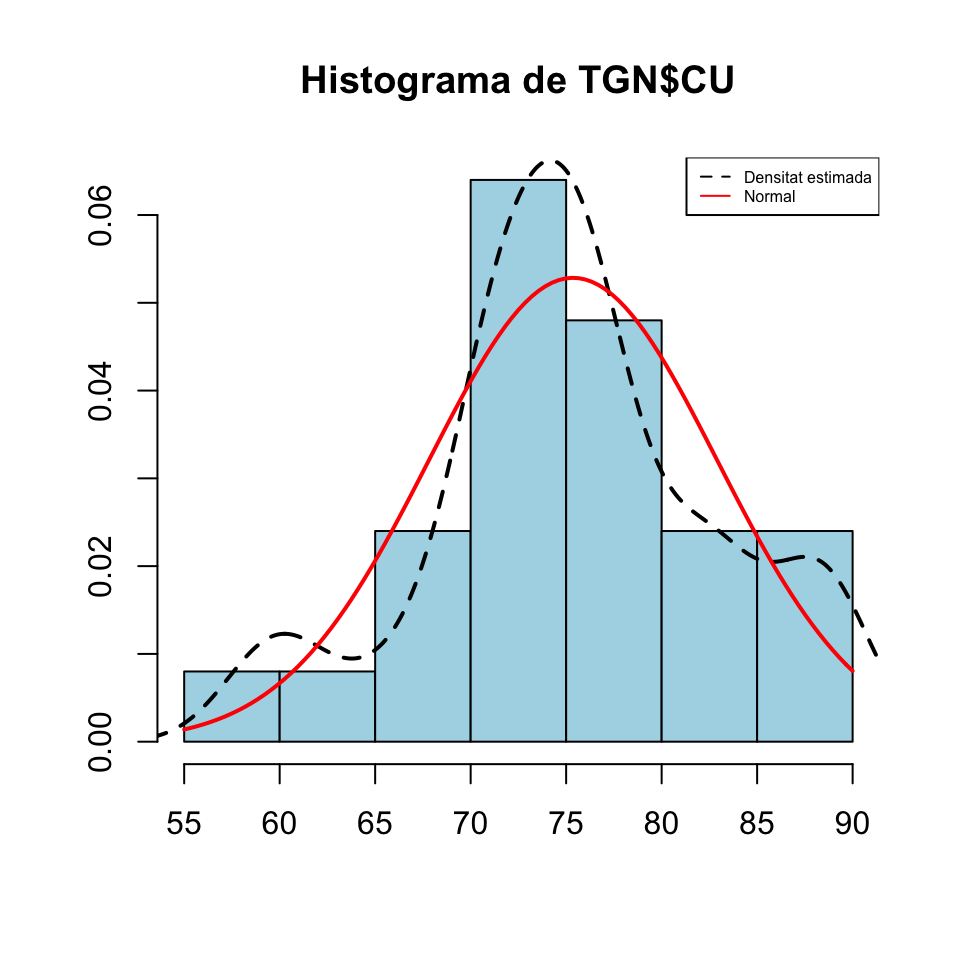 Com veieu, obtenim estimacions que van de 5794.2 a 6648.8. La mitjana d’aquestes estimacions és
## [1] 6415.9És hora de descobrir el valor de N, per veure si ens hi hem fet a prop:
## [1] 7134No hem fet molt enfora, com veieu.
3.7.2 Marca-recaptura
Suposem que en una població hi ha \(N\) individus, en capturam \(K\) (tots diferents), els marcam i els tornam a amollar. Al cap de poc temps, en capturam \(n\), dels quals \(k\) estan marcats. A partir d’aquestes dades, volem estimar \(N\).
Si suposam que \(N\) i \(K\) no han canviat de la primera a la segona captura (cap individu no ha abandonat la població ni s’hi ha incorporat), aleshores la variable aleatòria \(X\) definida per “Capturam un individu i miram si està marcat” és Bernoulli \(Be(p)\) amb \(p=K/N\), on coneixem la \(K\) i volem estimar la \(N\).
Sigui ara \(x_1,\ldots,x_n\) la mostra capturada en segon lloc. La seva proporció mostral d’individus marcats és \(\widehat{p}_X=k/n\). Com que \(\widehat{p}_X\) és l’estimador màxim versemblant de \(p\), estimam que \[ \dfrac{K}{N}=\dfrac{k}{n} \] d’on, aïllant la \(N\), estimam que \[ N=\frac{n\cdot K}{k}. \]
En resum, l’estimador \[ \widehat{N}=\frac{n\cdot K}{k} \] maximitza la probabilitat d’obtenir \(k\) individus marcats en una mostra aleatòria de \(n\) individus. És l’estimador màxim versemblant de \(N\) a partir de \(K\), \(k\) i \(n\); també se li diu estimador de Lincoln-Petersen. Fixau-vos que aquest estimador no fa res més que traduir la proporció “Si he trobat \(k\) individus marcats en un conjunt de \(n\) individus, què ha de valer el nombre total \(N\) de individus perquè hi hagi en total \(K\) individus marcats?”
Exemple 3.14 Suposem que hem marcat 15 peixos d’un llac, i que en una captura posterior de 10 peixos, n’hi ha 4 de marcats. Quants peixos conté el llac?
Ho estimarem amb l’estimador de Lincoln-Petersen: \[ \widehat{N}=\frac{15\cdot 10}{4}=37.5 \] Per tant, estimam que hi haurà entre 37 i 38 peixos al llac.
En aquest cas podem comprovar la màxima versemblança d’aquesta estimació, calculant la probabilitat d’obtenir 4 individus marcats en una mostra aleatòria de 10 individus d’una població de \(N\) individus on n’hi ha 15 de marcats i trobant la \(N\) que maximitza aquesta probabilitat. Per fer-ho, recordem que si una població està formada per \(K\) subjectes marcats i \(N-K\) subjectes no marcats, el nombre de subjectes marcats en mostres aleatòries sense reposició de mida \(n\) segueix una distribució hipergeomètrica \(H(K, N-K,n)\). Per tant, per a cada possible \(N\), la probabilitat que en una mostra de 10 peixos del nostre llac n’hi hagi 4 de marcats serà dhyper(4,15,N-15,10).
N=15:1000 #Rang de possibles valors de N
p=dhyper(4,15,N-15,10) #Probabilitats de 4 marcats en 10
Nmax=N[which(p==max(p))] # N que maximitza la probabilitat
Nmax## [1] 37Aquest Nmax és la \(N\) que fa màxima la probabilitat que en una mostra de 10 peixos del nostre llac n’hi hagi 4 de marcats. Vegem-ho amb un gràfic:
plot(N[1:86],p[1:86],type="h",xaxp=c(15,100,17),xlab="N",ylab="p")
points(Nmax,dhyper(4,15,Nmax-15,10),type="h",col="red",lwd=1.5)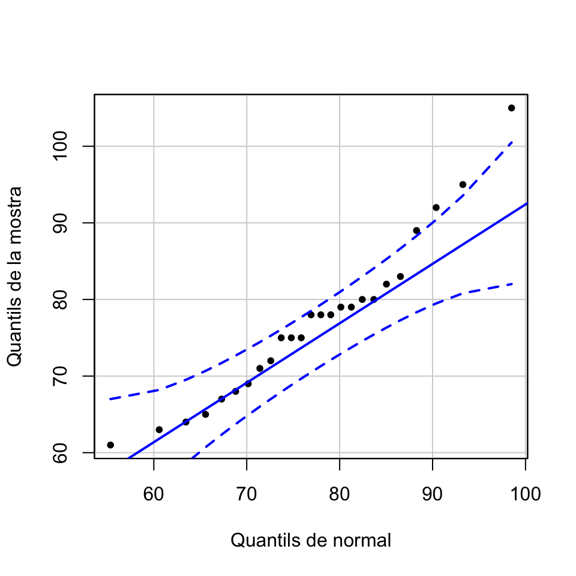
Un altre estimador per a \(N\) a partir de \(K\), \(n\) i \(k\) és l’estimador de Chapman: \[ \widehat{N}=\frac{(n+1)\cdot (K+1)}{k+1}-1 \]
La idea és que afegim a la població un individu extra i marcat, que suposam que també capturam a la segona mostra. Llavors, aplicam l’estimador anterior i finalment restam 1, per descomptar l’individu marcat extra que realment no pertany a la població que volem estimar.
En la situació de l’Exemple 3.14, aquest estimador dóna \[ \widehat{N}=\frac{16\cdot 11}{5}-1=34.2 \] i ens fa estimar una població total d’uns 34 peixos. Abans hem obtingut entre 37 i 38 peixos.
L’estimador de Lincoln-Petersen \[ \widehat{N}=\frac{n\cdot K}{k} \] és esbiaixat, amb biaix que tendeix a 0. L’estimador de Chapman és menys esbiaixat però no és màxim versemblant.
Exemple 3.15 Fem un experiment similar al de l’Exemple 3.13. Generarem a l’atzar una mida N d’una població grandeta i en marcarem una certa quantitat K. A continuació, prendrem 50 mostres aleaòries sense reposició de la nostra població i amb cada una d’aquestes mostres estimarem la N emprant els dos estimadors que hem explicat en aquesta subsecció. Al final, calcularem les mitjanes d’aquestes estimacions i les compararem amb el valor real de N, que no descobrirem fins el final. Com a l’Exemple 3.13, fixarem la llavor d’aleatorietat a l’atzar.
## [1] 6244Ara generam la mida N de la població com un nombre a l’atzar entre 5000 i 10000.
Ara en capturam i marcam K; per fixar idees, prendrem K=200.
Per simplificar, suposarem que els N individus de la nostra població estan numerats de l’1 a l’N i que els marcats són els K primers. Ara generarem 100 mostres aleatòries sense reposició d’aquesta població, i ens quedarem amb la mida i el nombre d’individus marcats (és a dir, el nombre de valors menor o iguals a K=100 en la mostra). Les mides les generarem a l’atzar entre, posem, 50 i 150:
Mostra=function(a,b,P,M){
#a i b: mides màxima i mínima de la mostra; P: mida de la població;
#M: nombre de marcats
n=sample(a:b,1) #Mida de la mostra
X=sample(P,n,rep=FALSE) # Mostra aleatòria
c(n,length(which(X<=M))) #Parell (mida, nombre de marcats)
}
Mostres=replicate(100,Mostra(50,150,N,K))
Mostres## [,1] [,2] [,3] [,4] [,5] [,6] [,7] [,8] [,9] [,10] [,11] [,12] [,13] [,14]
## [1,] 79 94 110 116 128 127 68 59 144 135 147 86 89 51
## [2,] 2 2 1 2 1 3 2 1 4 2 10 8 4 0
## [,15] [,16] [,17] [,18] [,19] [,20] [,21] [,22] [,23] [,24] [,25] [,26]
## [1,] 121 95 50 54 71 67 113 141 65 129 111 97
## [2,] 4 4 0 2 3 0 0 4 3 3 5 2
## [,27] [,28] [,29] [,30] [,31] [,32] [,33] [,34] [,35] [,36] [,37] [,38]
## [1,] 74 102 88 82 112 92 120 138 82 65 103 114
## [2,] 1 2 3 9 1 6 1 2 1 3 6 5
## [,39] [,40] [,41] [,42] [,43] [,44] [,45] [,46] [,47] [,48] [,49] [,50]
## [1,] 106 72 57 54 123 68 51 52 81 75 121 90
## [2,] 1 0 0 2 3 1 2 2 2 2 3 3
## [,51] [,52] [,53] [,54] [,55] [,56] [,57] [,58] [,59] [,60] [,61] [,62]
## [1,] 87 123 128 73 139 115 130 50 102 80 90 92
## [2,] 1 1 3 2 5 2 1 2 2 3 2 1
## [,63] [,64] [,65] [,66] [,67] [,68] [,69] [,70] [,71] [,72] [,73] [,74]
## [1,] 143 125 141 132 54 102 79 100 107 137 113 118
## [2,] 3 5 6 1 1 4 3 2 4 4 2 4
## [,75] [,76] [,77] [,78] [,79] [,80] [,81] [,82] [,83] [,84] [,85] [,86]
## [1,] 106 101 78 56 99 82 118 131 102 108 63 136
## [2,] 4 3 6 3 3 2 4 6 0 4 1 5
## [,87] [,88] [,89] [,90] [,91] [,92] [,93] [,94] [,95] [,96] [,97] [,98]
## [1,] 60 73 81 107 130 70 70 54 103 77 115 133
## [2,] 4 0 1 3 4 1 1 2 3 3 1 5
## [,99] [,100]
## [1,] 75 100
## [2,] 1 3En aquesta matriu Mostres, cada columna correspon a una mostra aleatòria: la primera filera és la seva mida \(n\) i la segona filera el nombre d’individus marcats a la mostra. Ara, amb cada una d’aquestes mostres, podem estimar la mida N de la població per mitjà de l’estimador de Lincoln-Petersen.
## [1] 1822.2 2150.0 2600.0 2940.0 3000.0 3066.7 3433.3 3733.3 4333.3
## [10] 4333.3 4366.7 4440.0 4450.0 4560.0 4700.0 4733.3 4750.0 5000.0
## [19] 5000.0 5100.0 5100.0 5133.3 5200.0 5266.7 5300.0 5320.0 5333.3
## [28] 5350.0 5400.0 5400.0 5400.0 5400.0 5440.0 5560.0 5866.7 5900.0
## [37] 5900.0 6000.0 6050.0 6500.0 6600.0 6666.7 6733.3 6800.0 6850.0
## [46] 6866.7 7050.0 7133.3 7200.0 7300.0 7500.0 7900.0 8066.7 8100.0
## [55] 8200.0 8200.0 8466.7 8533.3 8600.0 9000.0 9400.0 9533.3 9700.0
## [64] 10000.0 10200.0 10200.0 10800.0 11300.0 11500.0 11600.0 11800.0 12600.0
## [73] 13500.0 13600.0 13800.0 14000.0 14000.0 14800.0 15000.0 16200.0 16400.0
## [82] 17400.0 18400.0 21200.0 22000.0 22400.0 23000.0 24000.0 24600.0 25600.0
## [91] 26000.0 26400.0 Inf Inf Inf Inf Inf Inf Inf
## [100] Infhist(EstimacionsLP, breaks=20,col="light blue",xlab="Estimacions de N",ylab="Freqüències",main="Estimador de Lincoln-Petersen")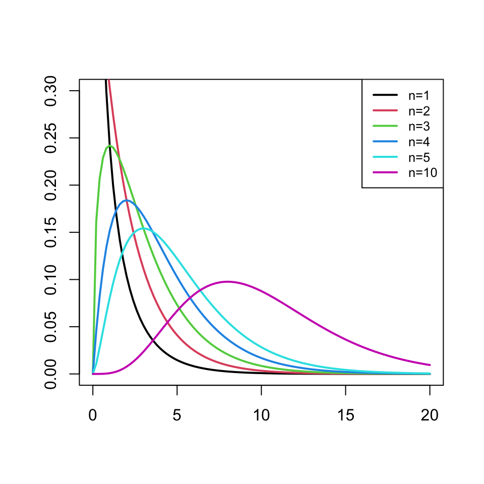 Com veieu, obtenim estimacions que van de 1822.2 a \(\infty\), que corresponen a mostres on no ens ha sortit cap individu marcat. La mitjana de les estimacions finites és
## [1] 9261.2També podem emprar l’estimador de Chapman:
## [1] 1667.3 1942.0 2267.4 2451.2 2669.4 2703.4 2863.2 2985.3 3315.5
## [10] 3315.5 3416.0 3483.0 3550.0 3617.0 3617.0 3684.0 3684.0 3684.0
## [19] 3751.0 3789.3 3851.5 3858.2 3918.5 4019.0 4069.2 4076.4 4139.6
## [28] 4220.0 4300.4 4340.6 4380.8 4471.2 4488.0 4571.8 4588.5 4622.0
## [37] 4689.0 4782.8 4782.8 4903.4 4957.0 5024.0 5074.2 5091.0 5124.5
## [46] 5225.0 5265.2 5359.0 5426.0 5493.0 5526.5 5546.6 5560.0 5707.4
## [55] 5828.0 6029.0 6096.0 6129.5 6230.0 6364.0 6431.0 6431.0 6481.2
## [64] 6531.5 6565.0 6766.0 6900.0 6900.0 6933.5 7134.5 7134.5 7235.0
## [73] 7536.5 7637.0 7637.0 7771.0 7838.0 8240.0 8340.5 8843.0 9111.0
## [82] 9312.0 9345.5 10250.0 10451.0 10752.5 11154.5 11355.5 11657.0 11657.0
## [91] 12159.5 12461.0 12963.5 13164.5 13365.5 13667.0 14672.0 14873.0 20702.0
## [100] 22913.0hist(EstimacionsCh, breaks=20,col="light blue",xlab="Estimacions de N",ylab="Freqüències",main="Estimador de Chapman")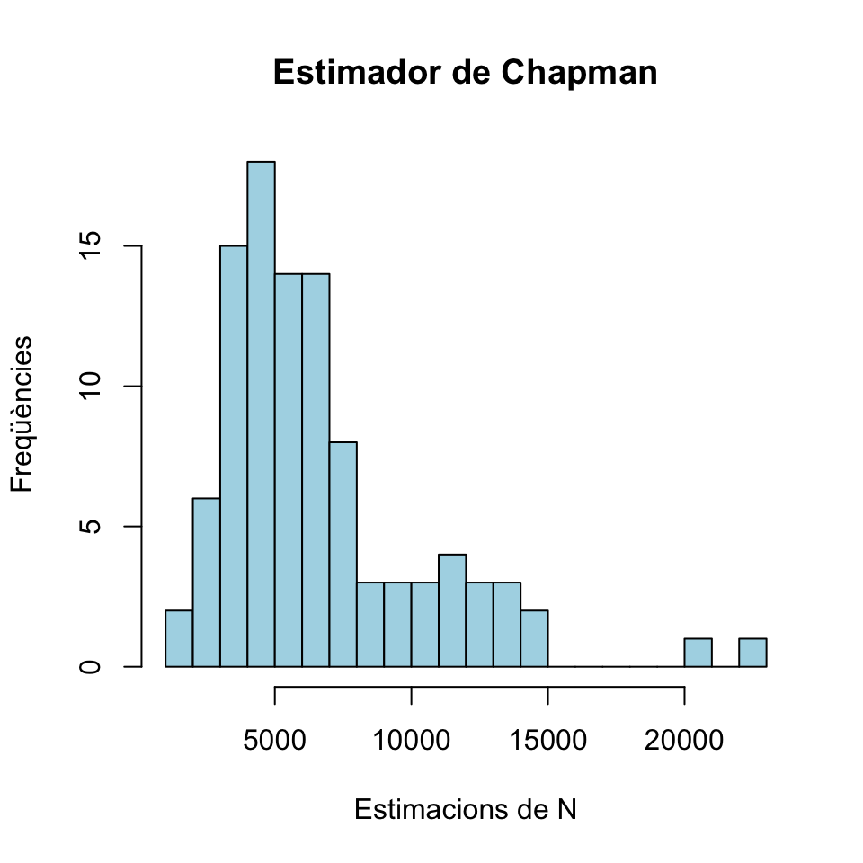 Com veieu, obtenim estimacions que van de 1667.3 a 22913; per construcció, no hi ha estimacions infinites. La mitjana d’aquestes estimacions és
## [1] 6618.6És hora de descobrir el valor de N, per veure si ens hi hem fet a prop:
## [1] 71343.8 Test de la lliçó 3
(1) Tenim una variable aleatòria \(X\) normal de mitjana \(\mu\) i desviació típica \(\sigma\). Prenem mostres aleatòries simples de mida \(n\), i indicam amb \(\widetilde{S}_X\) la seva desviació típica mostral. Quines de les afirmacions següents són vertaderes? Marca totes les respostes vertaderes:
- \(E(\widetilde{S}_X^2)=\sigma^2\).
- \(E(\widetilde{S}_X)=\sigma\).
- \(\widetilde{S}_X^2\) segueix una distribució \(\chi^2\) amb \(n-1\) graus de llibertat.
- \((n-1)\widetilde{S}_X^2/\sigma^2\) segueix una distribució \(\chi^2\) amb \(n-1\) graus de llibertat.
- Totes les altres respostes són falses.
(2) Quina o quines de les afirmacions següents sobre la mitjana mostral són vertaderes?
- Si la distribució poblacional és normal, sempre coincideix amb la mediana de la mostra.
- Sempre serveix per estimar la mitjana poblacional.
- Sempre serveix per estimar la mediana poblacional.
- Si la distribució poblacional és normal, serveix per estimar la mediana poblacional.
- Cap de les altres respostes és correcta.
(3) L’error estàndard de la mitjana mostral (marca totes les continuacions correctes):
- Mesura la variabilitat de les observacions que formen la mostra.
- És l’exactitud amb què es mesura cada observació de la mostra.
- Mesura la variabilitat de les mitjanes mostrals de mostres aleatòries simples.
- És proporcional a la mitjana mostral.
- És més gran que la desviació típica de la població.
- Sobre cada mostra val la desviació típica de la mostra.
- Cap de les altres respostes és correcta.
(4) La proporció d’afectats per una determinada malaltia en una població és del 10%. Si estimam aquesta proporció poblacional repetidament a partir de mostres de mida 1000, aquestes estimacions segueixen una distribució que (marca totes les afirmacions correctes):
- És una distribució mostral.
- És aproximadament normal.
- Té mitjana 0.1.
- Té variància 90.
- És binomial.
- Cap de les altres respostes és correcta.
(5) Si volem disminuir a la meitat l’error estàndard d’una proporció mostral (marcau una sola resposta):
- Hem d’augmentar en un 50% la mida de la mostra
- Hem de doblar la mida de la mostra.
- Hem de quadruplicar la mida de la mostra.
- Hem de dividir per 2 la mida de la mostra.
- Hem de dividir per 4 la mida de la mostra.
- Cap de les altres respostes és correcta.
(6) La probabilitat que els individus d’una determinada població tenguin una determinada característica \(C\) és \(p\). Prenem mostres aleatòries simples de mida \(n\) d’aquesta població, i indicam amb \(\widehat{p}_X\) la seva proporció mostral. Quina o quines de les afirmacions següents són vertaderes?
- \(\widehat{p}_X\) té sempre distribució binomial \(B(n,p)\).
- \(\widehat{p}_X\) té sempre distribució normal.
- Si \(n\) és gran, \(\widehat{p}_X\) té distribució aproximadament binomial \(B(n,p)\).
- Si \(n\) és gran, \(\widehat{p}_X\) té distribució aproximadament normal.
- L’error estàndard de \(\widehat{p}_X\) és \(\sqrt{p(1-p)/n}\).
(7) Si prenem mostres aleatòries simples més grans (marca totes les continuacions correctes):
- La mitjana mostral sempre disminueix.
- L’error estàndard de la mitjana sempre disminueix.
- L’error estàndard de la mitjana sempre augmenta.
- La variància mostral sempre augmenta.
- El nombre de graus de llibertat de l’estimador \(\chi^2\) associat a la variància mostral sempre augmenta.
- Cap de les altres respostes és correcta.
(8) La longitud d’una determinada espècie d’animalons té un valor mitjà de \(\mu\) cm. Si prenem mostres aleatòries simples de 20 exemplars, calculam la seva mitjana mostral \(\overline{X}\) i la seva desviació típica mostral \(\widetilde{S}_X\) (marca la continuació més correcta):
- L’estadístic \(\frac{\overline{X}-\mu}{\widetilde{S}_X/\sqrt{20}}\) segueix sempre una llei normal.
- L’estadístic \(\frac{\overline{X}-\mu}{\widetilde{S}_X/\sqrt{20}}\) segueix sempre una llei t de Student.
- L’estadístic \(\frac{\overline{X}-\mu}{\widetilde{S}_X/\sqrt{20}}\) segueix una llei normal si la longitud segueix una llei normal.
- L’estadístic \(\frac{\overline{X}-\mu}{\widetilde{S}_X/\sqrt{20}}\) segueix una llei t de Student si la longitud segueix una llei normal.
- L’estadístic \(\frac{\overline{X}-\mu}{\widetilde{S}_X/\sqrt{20}}\) no segueix mai ni una llei normal ni una llei t de Student, perquè les mostres no són prou grans.
(9) Sobre una mostra de 100 dones es va obtenir una concentració mitjana d’hemoglobina en sang de 10 amb una desviació típica de 2. Quin és l’error típic de la mostra?
- 0.02
- 0.04
- 0.2
- 0.4
- 1
- Cap dels valors anteriors
(10) Què significa que un estimador d’un paràmetre d’una variable aleatòria sigui no esbiaixat?
- Que la distribució mostral de l’estimador és normal.
- Que aplicat a una m.a.s. sempre dóna el valor poblacional del paràmetre.
- Que el seu valor esperat és igual al valor poblacional del paràmetre.
- Que aplicat a una m.a.s. sempre dóna el valor esperat del paràmetre.
- Que el seu error típic és petit.
(11) La concentració en sang a les persones d’un determinat metabolit (en mg/ml) té una distribució \(N(23,3)\). Quina de les afirmacions següents és vertadera?
- Aproximadament un 90% de les mostres aleatòries de 100 individus tindran la seva mitjana entre 22.4 i 23.6 mg/ml.
- Aproximadament un 95% de les mostres aleatòries de 100 individus tindran la seva mitjana entre 22.4 i 23.6 mg/ml.
- Aproximadament un 99% de les mostres aleatòries de 100 individus tindran la seva mitjana entre 22.4 i 23.6 mg/ml.
- Més d’un 99% de les mostres aleatòries de 100 individus tindran mitjana igual a 23.
- Cap de les afirmacions anteriors és vertadera.
(12) Sigui \(X\) una variable aleatòria \(N(\mu_X,2)\) i sigui \(\overline{X}\) la mitjana mostral de mida \(10\) de \(X\). Quina de les afirmacions següents és vertadera?
- La desviació típica de \(\overline{X}\) és igual a 2.
- La desviació típica de \(\overline{X}\) és menor que 2.
- La desviació típica de \(\overline{X}\) és major que 2.
- Que la desviació típica de \(\overline{X}\) sigui major, menor o igual que 2 depèn de \(\mu_X\).
- Cap de les afirmacions anteriors és vertadera.